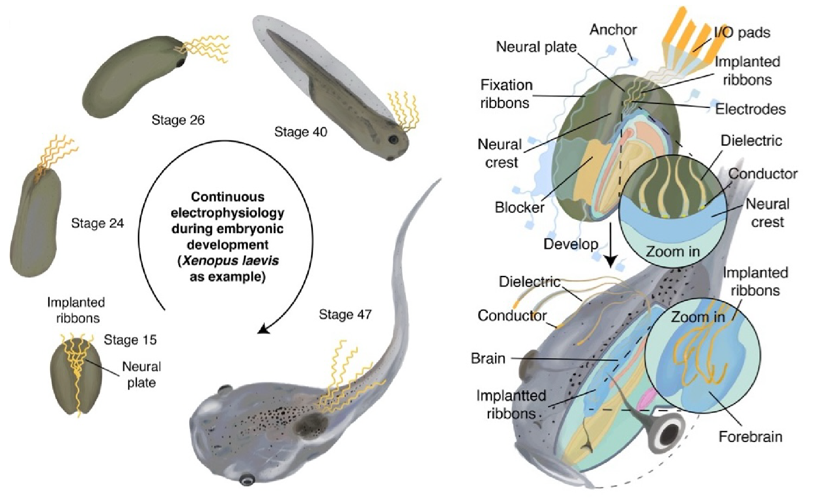
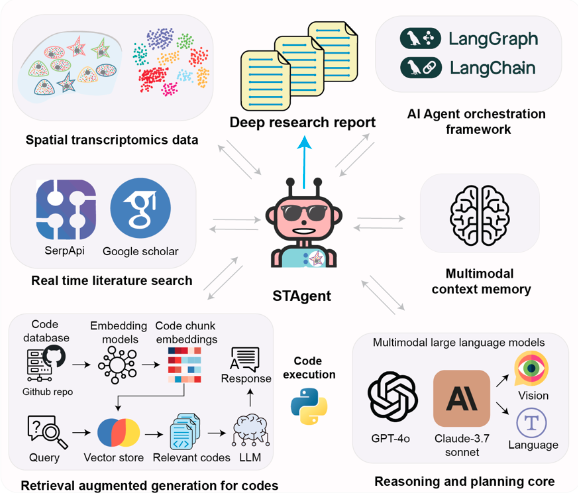
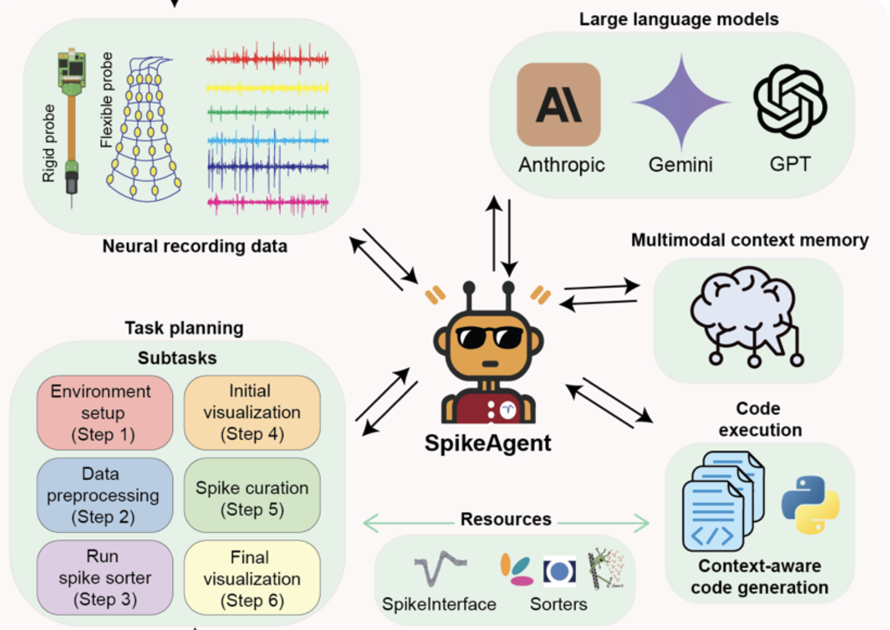
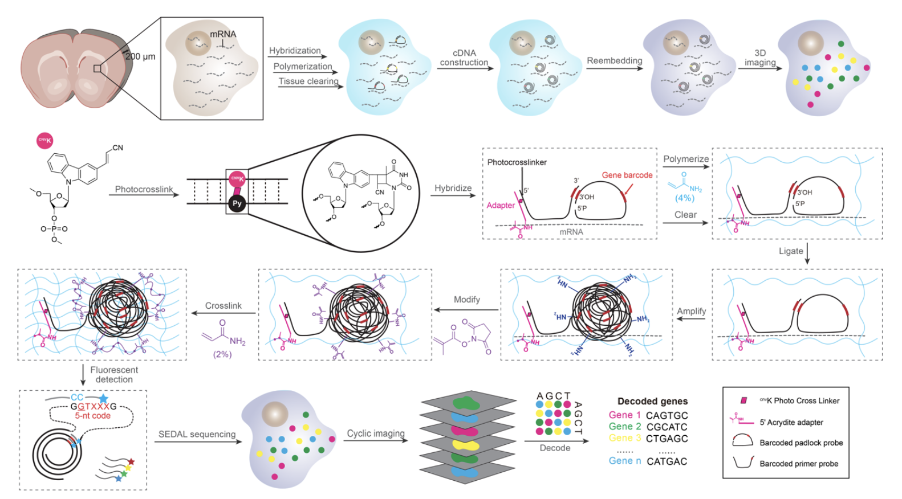
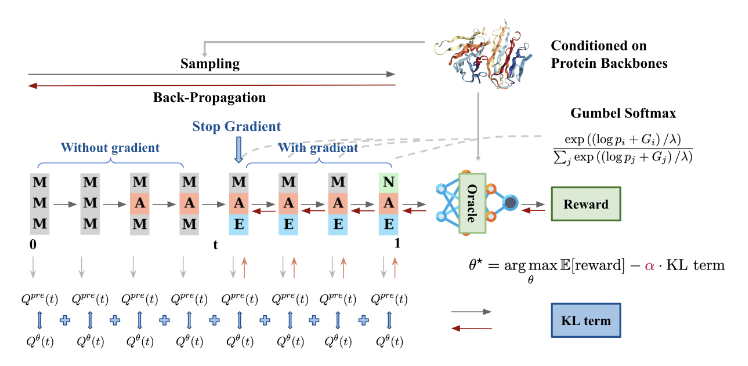
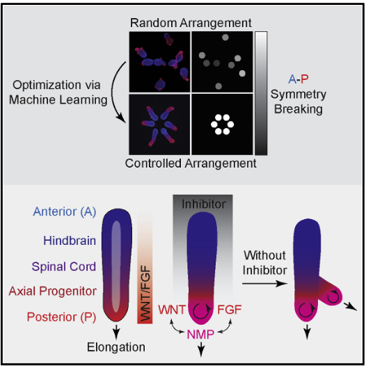
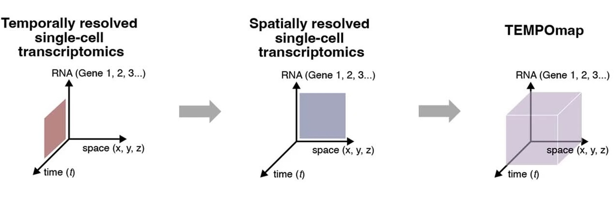
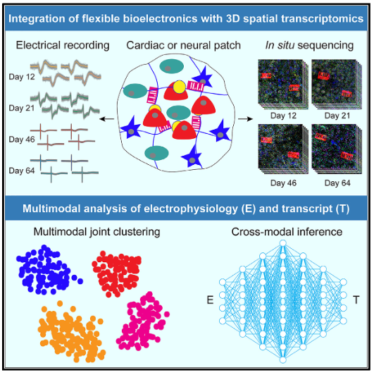
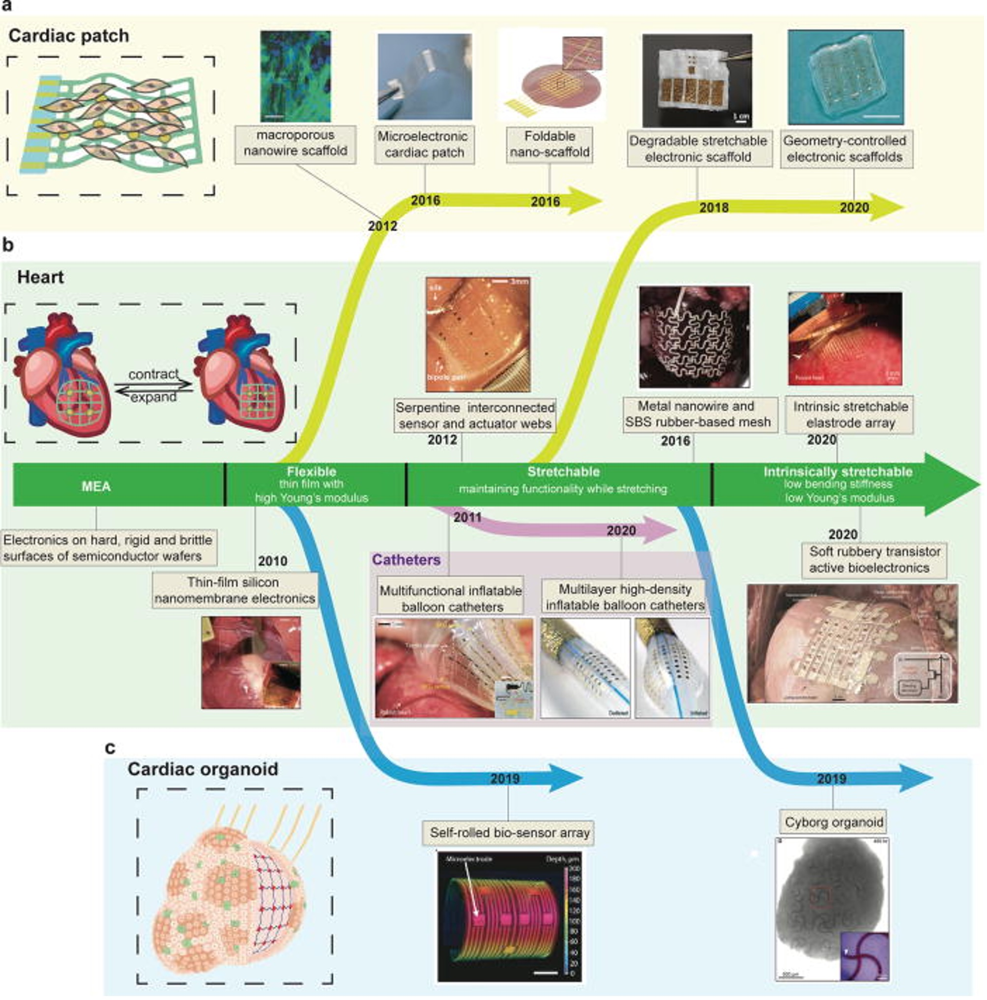

Nature Methods · Accepted, 2026
Selected publications and preprints by Yichun He and collaborators, including work completed before the launch of He Lab.
# Equal contribution · * Corresponding author
Nature Methods · Accepted, 2026

Nature, 2025



Nature Neuroscience · Accepted








Cell, 2023
